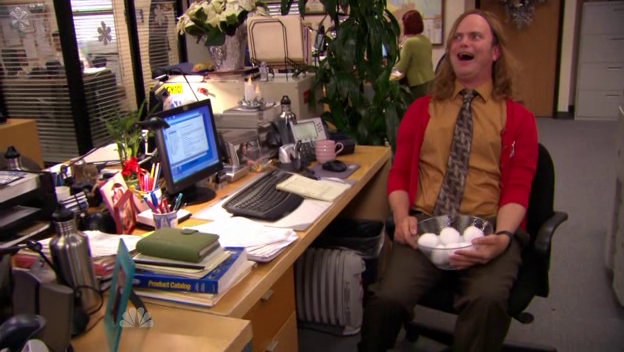
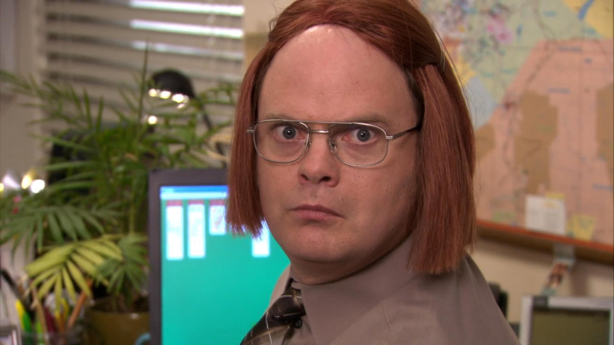

Here you can see Dwight as Jims beloved, Pamela!
This website is made to show how awesome Dwight is!
Best seller of the Scranton Branch, beet farmer, B&B owner, many years an Assistant To The Regional Manager and later a Regional Manager himself.

Dwight K. Schrute, a master of disguise!


Here you can see Dwight as Meredith!
Here you can see Dwight as Kevin!

Here you can see Dwight as Stanley-the-Manley!
“I don’t have a lot of experience with vampires, but I have hunted werewolves. I shot one once, but by the time I got to it, it had turned back into my neighbor’s dog.”
-Dwight K. Schrute